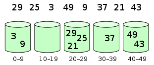

El ordenamiento por cubos (Bucket Sort) es un algoritmo de ordenamiento distribuido que asigna los elementos a ordenar a varios cubos (Bucket), luego ordena los elementos de cada cubo y finalmente combina los elementos de todos los cubos en orden. La idea central del ordenamiento por cubos es dividir los datos en una cantidad limitada de cubos, y luego ordenar cada cubo por separado (se puede usar otro algoritmo de ordenamiento o usar recursivamente el ordenamiento por cubos).
El ordenamiento por cubos es una versión mejorada del ordenamiento por conteo. Utiliza la relación de mapeo de funciones; la clave de su eficiencia radica en la determinación de esta función de mapeo. Para que el ordenamiento por cubos sea más eficiente, debemos lograr estos dos puntos:
- Cuando haya suficiente espacio adicional, aumentar el número de cubos tanto como sea posible.
- La función de mapeo utilizada debe poder distribuir uniformemente los N datos de entrada en K cubos.
Al mismo tiempo, para ordenar los elementos dentro de los cubos, la elección del algoritmo de ordenamiento por comparación es crucial para el rendimiento.
Pasos del algoritmo:
Inicializar los cubos: Crear varios cubos según el rango y la distribución de los datos.
Distribuir los elementos: Recorrer la lista a ordenar y asignar cada elemento al cubo correspondiente.
Ordenar cada cubo: Ordenar los elementos de cada cubo (se puede usar ordenamiento por inserción, ordenamiento rápido, etc.).
Combinar los cubos: Combinar en orden los elementos de todos los cubos para obtener el resultado final ordenado.
1. Cuándo es más rápido
Cuando los datos de entrada se pueden distribuir uniformemente en cada cubo.
2. Cuándo es más lento
Cuando los datos de entrada se asignan a un mismo cubo.
3. Diagrama
Elementos distribuidos en los cubos:

Luego, los elementos se ordenan dentro de cada cubo:

Supongamos que tenemos una lista a ordenar [0.42, 0.32, 0.33, 0.52, 0.37, 0.47, 0.51], el proceso de ordenamiento por cubos es el siguiente:
Inicializar los cubos：
Supongamos que el rango de datos es [0, 1), se crean 10 cubos, cada uno con un rango de 0.1.
Cubo 0: [0.0, 0.1)
Cubo 1: [0.1, 0.2)
...
Cubo 9: [0.9, 1.0)
Distribuir los elementos：
Recorrer la lista y asignar los elementos al cubo correspondiente:
0.42→ Cubo 40.32→ Cubo 30.33→ Cubo 30.52→ Cubo 50.37→ Cubo 30.47→ Cubo 40.51→ Cubo 5
Cubos después de la distribución:
Cubo 3:
[0.32, 0.33, 0.37]Cubo 4:
[0.42, 0.47]Cubo 5:
[0.52, 0.51]
Ordenar cada cubo：
Ordenar los elementos de cada cubo:
Cubo 3:
[0.32, 0.33, 0.37](Ya está ordenado).Cubo 4:
[0.42, 0.47](Ya está ordenado).Cubo 5:
[0.51, 0.52](Después de ordenar).
Combinar los cubos：
Combinar en orden los elementos de todos los cubos:
Cubo 3:
[0.32, 0.33, 0.37]Cubo 4:
[0.42, 0.47]Cubo 5:
[0.51, 0.52]
Lista después de la combinación:
[0.32, 0.33, 0.37, 0.42, 0.47, 0.51, 0.52]。
Ejemplo
if len(arr) == 0:
return arr
# Encontrar el valor mínimo y el máximo
min_val = min(arr)
max_val = max(arr)
# Inicializar los cubos
bucket_count = (max_val - min_val) // bucket_size + 1
buckets = [[] for _ in range(bucket_count)]
# Distribuir los elementos en los cubos
for num in arr:
index = int((num - min_val) // bucket_size)
buckets[index].append(num)
# Ordenar los elementos de cada cubo
sorted_arr = []
for bucket in buckets:
sorted_arr.extend(sorted(bucket)) # Usar la función de ordenamiento integrada
return sorted_arr
# Ejemplo
arr = [0.42, 0.32, 0.33, 0.52, 0.37, 0.47, 0.51]
sorted_arr = bucket_sort(arr)
print(sorted_arr) # Salida: [0.32, 0.33, 0.37, 0.42, 0.47, 0.51, 0.52]
Complejidad temporal
-
Distribuir los elementos: O(n), recorrer la lista una vez.
-
Ordenar cada cubo: Suponiendo que la cantidad de elementos en cada cubo es m, la complejidad temporal de ordenar un cubo es O(m log m). Si el número de cubos es k, la complejidad temporal total es O(k * m log m).
-
Combinar los cubos: O(n), recorrer todos los cubos una vez.
-
Complejidad temporal total: O(n + k * m log m), donde n es la longitud de la lista, k es el número de cubos y m es la cantidad promedio de elementos por cubo.
Complejidad espacial
-
O(n + k), se necesita espacio de almacenamiento adicional para los cubos y los resultados ordenados.
Ventajas y desventajas
-
Ventajas：
-
Cuando los datos están distribuidos uniformemente, el rendimiento es excelente.
-
Adecuado para ordenamiento externo (como ordenar archivos en disco).
-
-
Desventajas：
-
Cuando los datos no están distribuidos uniformemente, algunos cubos contienen demasiados elementos, lo que provoca una disminución del rendimiento.
-
Se necesita espacio de almacenamiento adicional.
-
Escenarios de aplicación
-
Escenarios donde los datos están distribuidos uniformemente.
-
Escenarios donde el rango de datos es conocido y limitado.
-
Adecuado para ordenamiento externo (como ordenar archivos en disco).
Implementación del código
JavaScript
Ejemplo
if (arr.length === 0) {
return arr;
}
var i;
var minValue = arr[0];
var maxValue = arr[0];
for (i = 1; i < arr.length; i++) {
if (arr[i] < minValue) {
minValue = arr[i]; // Valor mínimo de los datos de entrada
} else if (arr[i] > maxValue) {
maxValue = arr[i]; // Valor máximo de los datos de entrada
}
}
// Inicialización de los cubos
var DEFAULT_BUCKET_SIZE = 5; // Establecer el número predeterminado de cubos en 5
bucketSize = bucketSize || DEFAULT_BUCKET_SIZE;
var bucketCount = Math.floor((maxValue - minValue) / bucketSize) + 1;
var buckets = new Array(bucketCount);
for (i = 0; i < buckets.length; i++) {
buckets[i] = [];
}
// Usar la función de mapeo para distribuir los datos en los cubos
for (i = 0; i < arr.length; i++) {
buckets[Math.floor((arr[i] - minValue) / bucketSize)].push(arr[i]);
}
arr.length = 0;
for (i = 0; i < buckets.length; i++) {
insertionSort(buckets[i]); // Ordenar cada cubo, aquí se usa ordenamiento por inserción
for (var j = 0; j < buckets[i].length; j++) {
arr.push(buckets[i][j]);
}
}
return arr;
}
Java
Ejemplo
private static final InsertSort insertSort = new InsertSort();
@Override
public int[] sort(int[] sourceArray) throws Exception {
// Copiar arr, sin modificar el contenido del parámetro
int[] arr = Arrays.copyOf(sourceArray, sourceArray.length);
return bucketSort(arr, 5);
}
private int[] bucketSort(int[] arr, int bucketSize) throws Exception {
if (arr.length == 0) {
return arr;
}
int minValue = arr[0];
int maxValue = arr[0];
for (int value : arr) {
if (value < minValue) {
minValue = value;
} else if (value > maxValue) {
maxValue = value;
}
}
int bucketCount = (int) Math.floor((maxValue - minValue) / bucketSize) + 1;
int[][] buckets = new int[bucketCount][0];
// Usar la función de mapeo para distribuir los datos en los cubos
for (int i = 0; i < arr.length; i++) {
int index = (int) Math.floor((arr[i] - minValue) / bucketSize);
buckets[index] = arrAppend(buckets[index], arr[i]);
}
int arrIndex = 0;
for (int[] bucket : buckets) {
if (bucket.length <= 0) {
continue;
}
// Ordenar cada cubo, aquí se usa ordenamiento por inserción
bucket = insertSort.sort(bucket);
for (int value : bucket) {
arr[arrIndex++] = value;
}
}
return arr;
}
/**
* Expansión automática y guardado de datos
*
* @param arr
* @param value
*/
private int[] arrAppend(int[] arr, int value) {
arr = Arrays.copyOf(arr, arr.length + 1);
arr[arr.length - 1] = value;
return arr;
}
}
PHP
Ejemplo
{
if (count($arr) === 0) {
return $arr;
}
$minValue = $arr[0];
$maxValue = $arr[0];
for ($i = 1; $i < count($arr); $i++) {
if ($arr[$i] < $minValue) {
$minValue = $arr[$i];
} else if ($arr[$i] > $maxValue) {
$maxValue = $arr[$i];
}
}
$bucketCount = floor(($maxValue - $minValue) / $bucketSize) + 1;
$buckets = array();
for ($i = 0; $i < $bucketCount; $i++) {
$buckets[$i] = [];
}
for ($i = 0; $i < count($arr); $i++) {
$buckets[floor(($arr[$i] - $minValue) / $bucketSize)][] = $arr[$i];
}
$arr = array();
for ($i = 0; $i < count($buckets); $i++) {
$bucketTmp = $buckets[$i];
sort($bucketTmp);
for ($j = 0; $j < count($bucketTmp); $j++) {
$arr[] = $bucketTmp[$j];
}
}
return $arr;
}
C++
Ejemplo
#include<iostream>
#include<vector>
using namespace std;
const int BUCKET_NUM = 10;
struct ListNode{
explicit ListNode(int i=0):mData(i),mNext(NULL){}
ListNode* mNext;
int mData;
};
ListNode* insert(ListNode* head,int val){
ListNode dummyNode;
ListNode *newNode = new ListNode(val);
ListNode *pre,*curr;
dummyNode.mNext = head;
pre = &dummyNode;
curr = head;
while(NULL!=curr && curr->mData<=val){
pre = curr;
curr = curr->mNext;
}
newNode->mNext = curr;
pre->mNext = newNode;
return dummyNode.mNext;
}
ListNode* Merge(ListNode *head1,ListNode *head2){
ListNode dummyNode;
ListNode *dummy = &dummyNode;
while(NULL!=head1 && NULL!=head2){
if(head1->mData <= head2->mData){
dummy->mNext = head1;
head1 = head1->mNext;
}else{
dummy->mNext = head2;
head2 = head2->mNext;
}
dummy = dummy->mNext;
}
if(NULL!=head1) dummy->mNext = head1;
if(NULL!=head2) dummy->mNext = head2;
return dummyNode.mNext;
}
void BucketSort(int n,int arr[]){
vector<ListNode*> buckets(BUCKET_NUM,(ListNode*)(0));
for(int i=0;i<n;++i){
int index = arr[i]/BUCKET_NUM;
ListNode *head = buckets.at(index);
buckets.at(index) = insert(head,arr[i]);
}
ListNode *head = buckets.at(0);
for(int i=1;i<BUCKET_NUM;++i){
head = Merge(head,buckets.at(i));
}
for(int i=0;i<n;++i){
arr[i] = head->mData;
head = head->mNext;
}
}
Dirección de referencia:
https://github.com/hustcc/JS-Sorting-Algorithm/blob/master/9.bucketSort.md
https://zh.wikipedia.org/wiki/%E6%A1%B6%E6%8E%92%E5%BA%8F